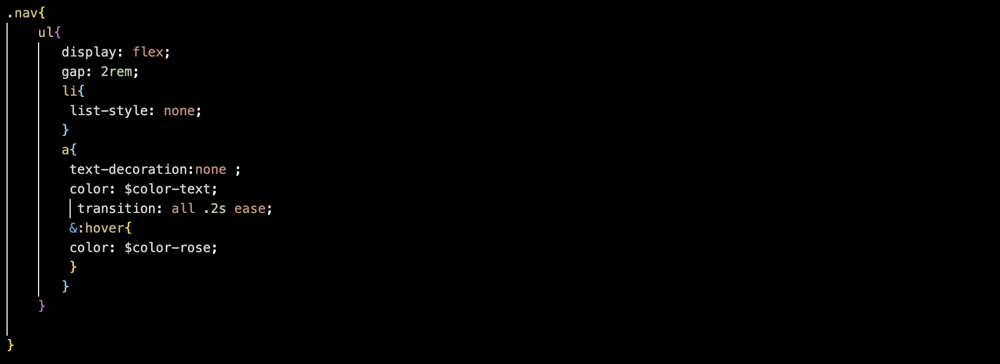
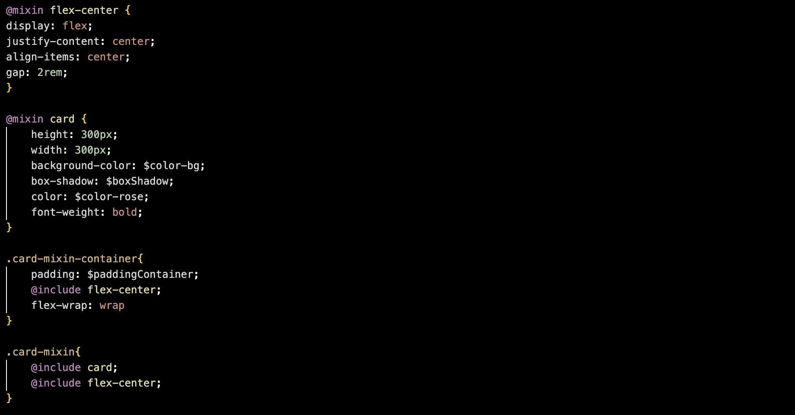
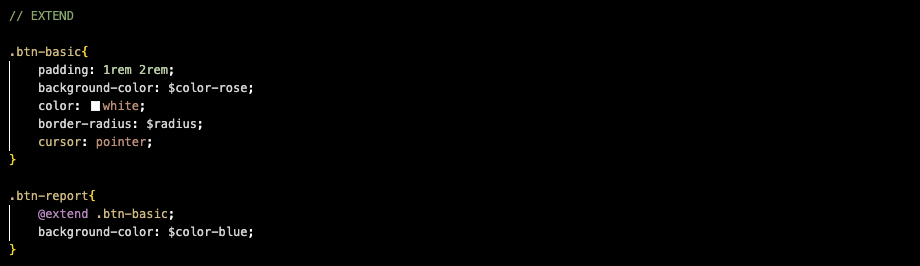

Présention du preprocesseur Sass
Sass est un langage de feuilles de style compilé en CSS. Il permet d'utiliser des variables, des règles imbriquées, des mixins, des fonctions et bien plus encore, le tout avec une syntaxe entièrement compatible avec le CSS. Sass aide à maintenir l'organisation des feuilles de style volumineuses et facilite le partage d'éléments de design au sein d'un même projet ou entre plusieurs projets.
Les variables Sass
Les variables Sass sont simples : vous attribuez une valeur à un nom commençant par le signe $, puis vous pouvez utiliser ce nom à la place de la valeur elle-même.
Elles permettent de réduire les répétitions, d'effectuer des calculs complexes, de configurer des bibliothèques, et bien plus encore.
Déclarations des variables :

Application dans une class, ici le logo de ce site :

Le nesting Sass
L’imbrication permet d’écrire un sélecteur à l’intérieur d’un autre. Elle aide à regrouper les règles qui appartiennent à un même composant. Il est déconseillé d'en abuser car le code risque d'être illisble pour soi-même et les autres développeurs amenés à reprendre votre travail.
Exemple de nesting (imbrication), ici la barre de navigation de ce site :

Le mixin Sass
Un mixin est une recette de déclarations CSS. Tu le définis avec @mixin , puis tu l’insères où tu en as besoin avec @include.
Exemple de mixin avec les 2 cards ci-dessus:

Extend Sass
La directive @extend en SCSS permet à un sélecteur d'hériter des propriétés CSS d'un autre sélecteur, ce qui évite la duplication de code et rend le style plus propre.
Exemple de @extend avec les 2 boutons ci-dessus:
